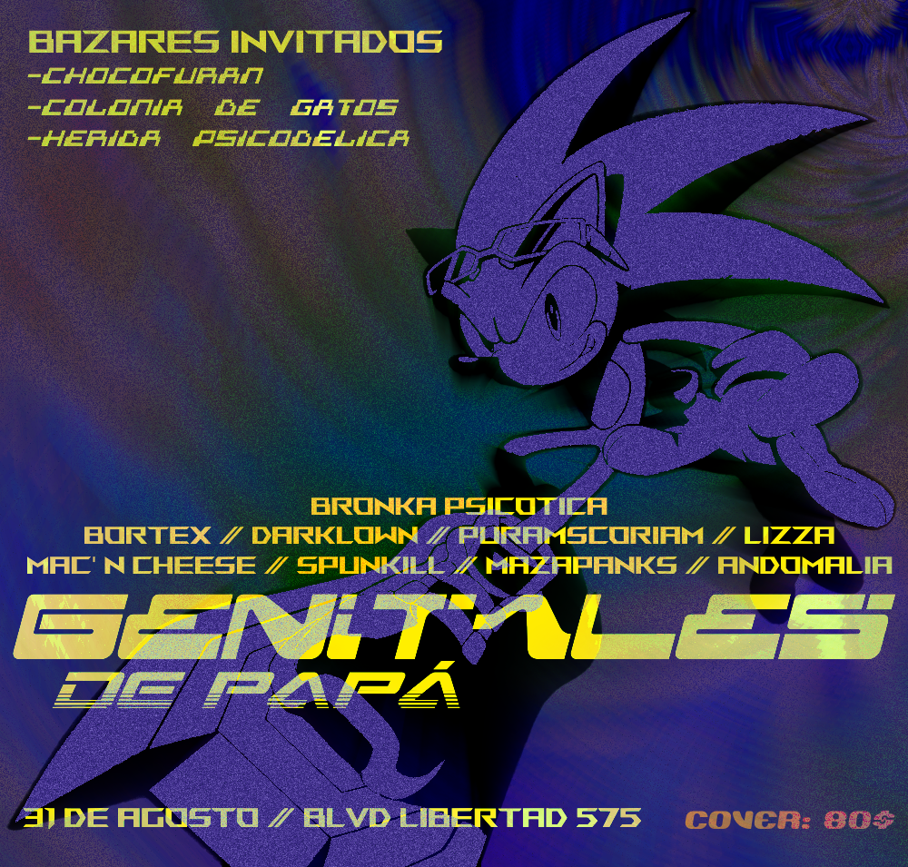
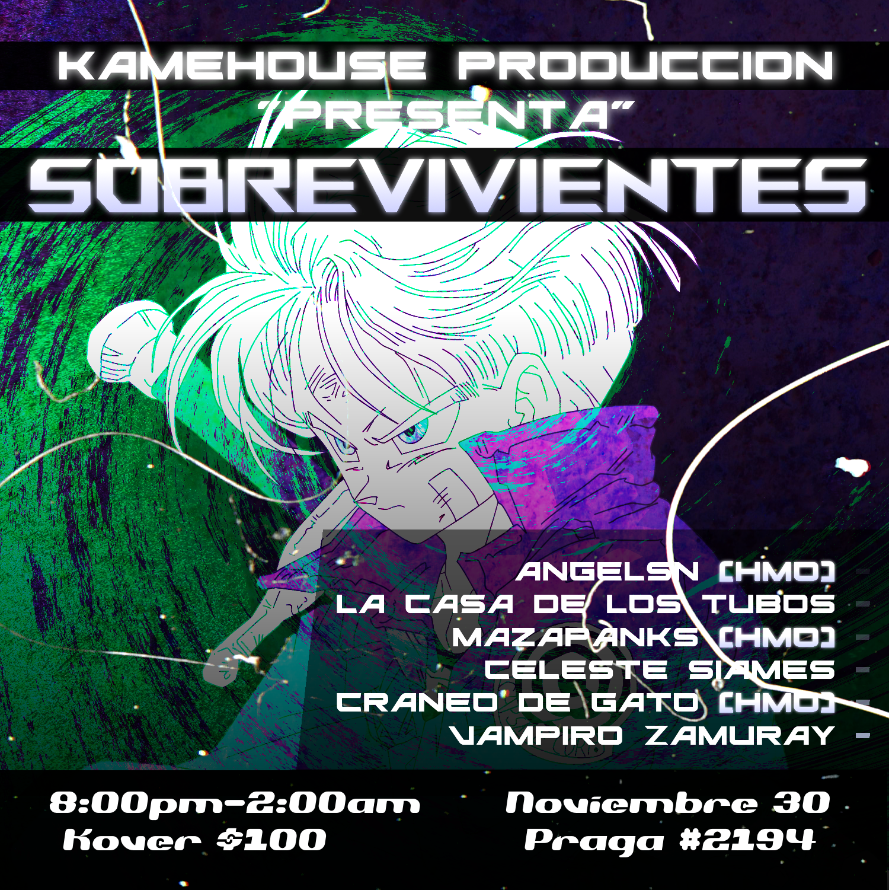
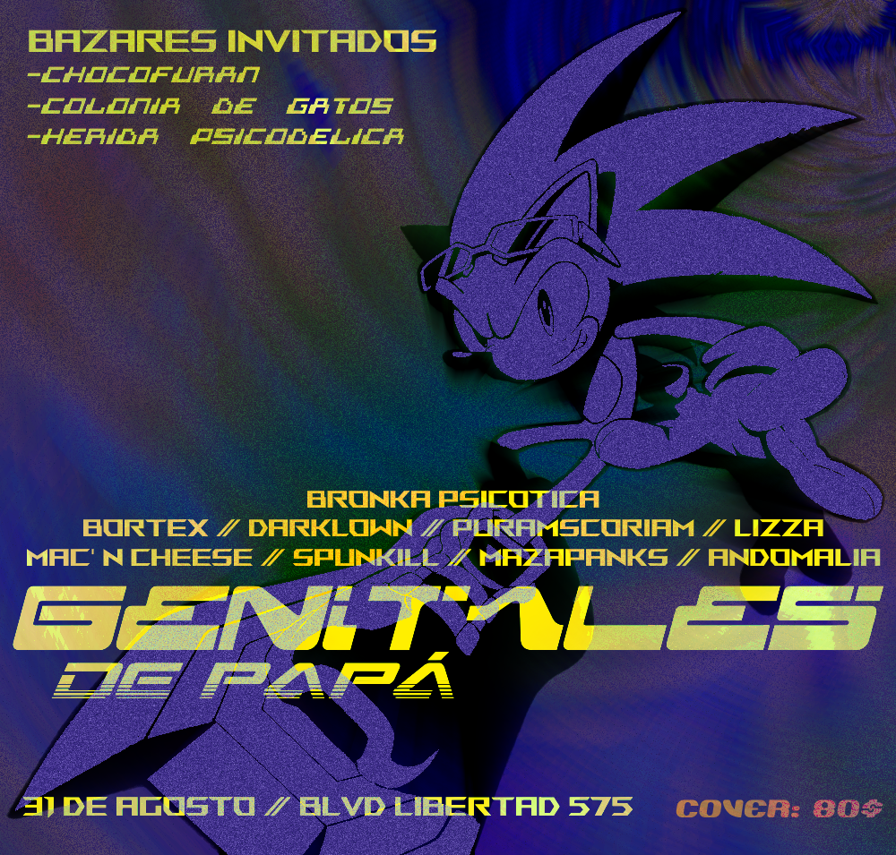
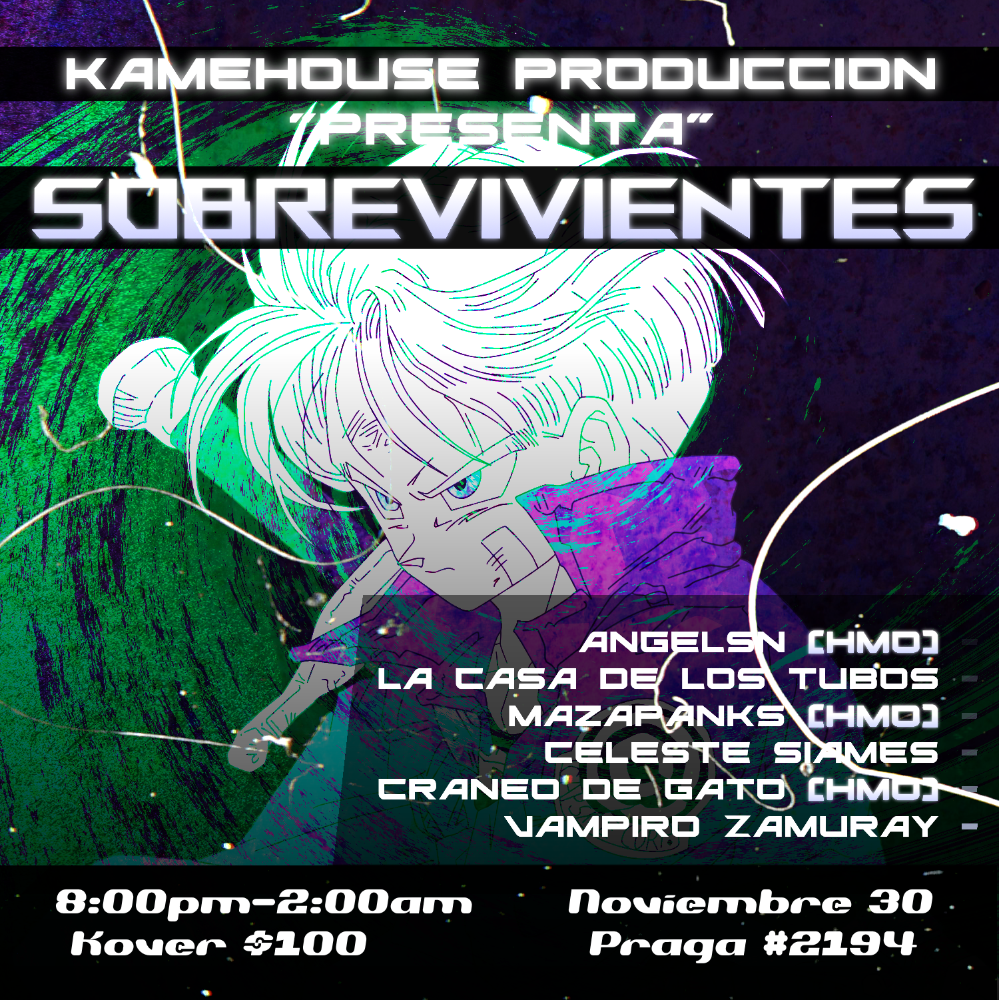

Proyectos destacables
haz click en la imagen para llevarte al repositorio del proyecto

Python Downloader
Programa que realicé simplemente porque...
Flyers y fotos en vivo
angelsn es un artista originario de Hermosillo que se introdujo en el mundo de la música a la temprana edad de 10 años. Su interés por la música surgió cuando decidió unirse a una clase de música en su nueva primaria con el fin de hacer amigos. A pesar de esta breve experiencia, despertó su gusto por la guitarra. Aunque dejó de tocar por un tiempo, durante la pandemia del 2020, volvió el mundo de la música y decidió retomar la guitarra. En 2021, se adentró a lo que es la producción musical gracias a la propuesta de un amigo para crear un mod de Friday Night Funkin' con temática de Doom en compañía de él (mod el cual nunca terminaron), realizando covers de canciones de los juegos y, finalmente, lanzando música original. angelsn se caracteriza por ser un artista que gusta de mezclar rock y metal con subgéneros de la electrónica como lo son jungle, dnb, breakbeat, dubstep, techno, glitchcore, hardstyle etc y reinventar canciones para darles un nuevo proposito e intención, cosa que parece ser del agrado de sus fans.
 


